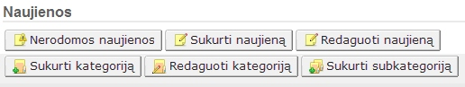
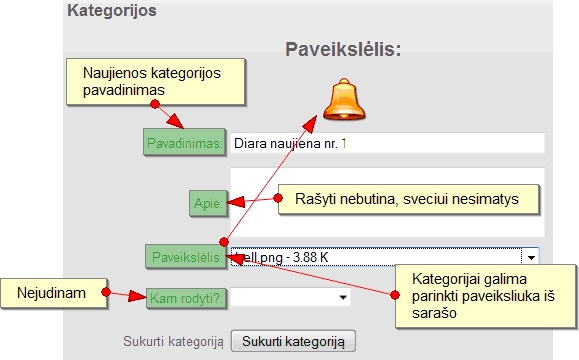
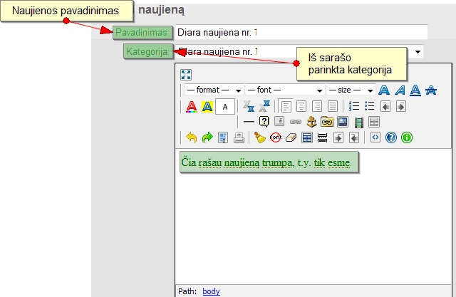
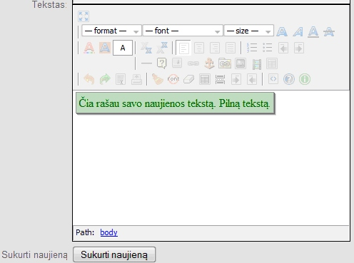

|
Pavadinimas |
Paaiškinimas |
|
Pavadinimas |
moderatorius (būtina) |
|
Apie |
aprašymas |
|
Paveikslėlis |
atitinkamas (direktorija: images/icons) |
|
Leisti moderuoti (jei ne moderatorių grupė, paikite tuščią) |
pasirenkamas puslapis, kuriuos jie galės administruoti (dinaminiai puslapiai). Juos galima rikiuoti |
|
Grupės lygis |
kuo didesnis skaičius, tuo prastesnis lygis |
Svetainės valdymas
Paprastai, administratorius prie svetainės prisijungia naršyklės adreso laukelyje greta savo svetainės adreso prirašydamas ?id,999. Pavyzdžiui, Jūsų svetainės adresas http://www.index.lt. Tad norėdami prisijungti prie šios svetainės administravimui, jums tereikia prie šio adreso prirašyti minėtą kombinaciją, t.y. http://www.index.lt?id,999.
Tai įrašę naršyklės adreso laukelyje pateksite į prisijungimo langą, kur jūsų paprašys įvesti prisijungimo duomenis: vartotojo vardą ir slaptažodį. Pagal nutylėjimą pradiniai prisijungimo administravimui duomenys yra:
| Vartotojo vardas | admin |
| Slaptažodis | admin |
Prisijungę, pateksite į langą su administravimo skydeliu. Apie tai plačiau skaitykite tolesniame skyriuje.
Norint, kad jokia paieškos sistema (pavyzdžiui, Google) neindeksuotų (neatsimintų) Jūsų tinklalapio, kuris yra kūrimo stadijoje, reikia įjungti svetainės "remonto" režimą.
Administravimo skydelyje spaudžiame mygtuką "Konfigūracija". Atsivėrusiame lange surandame laukelį pavadinimu "Remontas" ir parenkame "Taip". Taip pat rekomenduojama parašyti "Uždarytos svetainės tekstas:". Pavyzdžiui, įrašome "Remontuojame".
Norint pakeisti svetainės dizainą, Jums reikia administravimo skydelyje spustelėti mygtuką "Konfigūracija", o atsivėrusiame lange eilutėje "Dizainas" iš pateikto sąrašo išsirenkite Jums patinkantį dizainą.
Administravimo panelėje, paspaudę mygtuką "Konfigūracija" turėtume (rekomenduojama) užpildyti šiuos laukelius:
Trumpai apie kiekvieną laukelį:
Tinklalapio pavadinimas - užpildžius šį laukelį pavadinimas atsiranda naršyklės lango antraštėje, paprastai svetainės titulinio puslapio viršuje (gali būti, kad ir ne vienoje vietoje).
Pradinis puslapis - paprastai pakanka palikti tokį, koks yra. Pavyzdžiui, naujienos.php
Apie - tai Jūsų svetainės aprašymas. Paprastai atsiranda meniu pavyzdžiui pavadinimu "Apie mus" puslapyje.
Raktažodžiai - tai reikšminiai žodžiai, apibūdinantys Jūsų svetainę, jos turinį. Šių žodžių galima rašyti gana daug, tačiau nevertėtų viršyti 240 simbolių.
Copyright arba Autorinis tekstas - tai įprastai būna pavadinimas, trumpas apibūdinimas, kam priklauso autorinės svetainės kūrimo teisės.
Svetainės el. paštas. Šiame laukelyje įrašykite savo ar savo įmonės el. pašto adresą, kad būtumėte pasiekiami svetainės lankytojų.
Leisti registruotis. Prieš kurdami svetainę, turite numatyti keletą dalykų į priekį. Vienas iš jų - registracija. Jei naujų vartotojų registracija reikalinga - parenkame "Taip", jei ne - atitinkamai.
Svetainė remontuojama - šiam laukeliui parenkame "Taip", jei svetainė yra uždaryta arba neparuošta naudojimui, jei parenkame "Ne", svetainė yra prieinama plačiajai visuomenei ir paieškos sistemoms.
Visi kiti laukeliai gali būti pildomi, bet tai nėra būtina.
Ar rodyti sugeneravimo laiką? Sugeneravimo laikas - tai laikas, per kurį duomenys "suvaikšto" į duomenų bazę bei sugeneruojamas tinklapio kodas ir yra pateikiami svetainėje. Šiuos duomenis mato tik administratorius.
Uždarytos svetainės tekstas. Šiame laukelyje rašomas tas tekstas, kuris bus rodomas, jei nuspręsite svetainę uždaryti, t.y. padaryti neprieinamą viešai.
Kiek rodyti naujienų? Tai taip pat skaičius, nurodantis, kiek naujienų bus matoma tituliniame svetainės puslapyje. Minimalus skaičius - penkios. Kai naujienų skaičius viršija konfigūracijoje nurodytą skaičių, atsiranda naujienų puslapiavimas. Pastaba: naujienos rikiuojamos nuo naujausiai parašytos iki seniausios.
Svetainės stilius. Šiame sąraše galima parinkti savo svetainės dizainą.
Užpildę visus laukelius, nepamirškite paspausti "Saugoti" mygtuko.
Administravime, Konfigūracijos formoje "Raktažodžiai" laukelyje jūs turite prirašyti kuo daugiau žodžių, susijusių su jūsų svetainės turiniu (žodžius atskirkite kableliais), taip pat užpildykite laukelius "Puslapio pavadinimas" ir "apie"
Jei nusprendėte, jog į jūsų svetainę bus galima registruotis vartotojams, spustelėkite administravimo skydelyje "Puslapiai", o atsivėrusiame lange parinkite "Pasirinkti puslapį" ir failų sąraše suraskite bei pasirinkite failą "reg.php".
Kiekvieną kartą rašant naujieną, straipsnį, kuriant galerijos kategoriją reikėtų parinkti, kuri vartotojų grupė turės teisę matyti atitinkamos svetainės dalies turinį. Norint kad atitinkama dali būtų prieinama visiem be išimčių šioje vietoje neparinkite jokios grupės (laukelį palikite tuščią).
Sukūrus svetainę su MightMedia TVS pagal nutylėjimą yra sukuriamos dvi vartotojų grupės/kategorijos: administratorius ir narys. Šios kategorijos neredaguojamos ir netrinamos.
SVARBU! Prisijungiant prie svetainės administravimo, didžiosios ir mažosios raidės turi skirtingą reikšmę.Vartotojų teisės: kategorija suprantama, kaip vartotojų grupė.
Yra galimybė sukurti vartotojų grupes. Pavyzdžiui, sukurkime moderatorių grupę. Tam reikia užpildyti formą ir nurodyti puslapius kuriuos galės moderuoti:
| Pavadinimas | Paaiškinimas |
| Pavadinimas | moderatorius (būtina) |
| Apie | aprašymas |
| Paveikslėlis | atitinkamas (direktorija: images/icons) |
| Leisti moderuoti (jei ne moderatorių grupė, paikite tuščią) | pasirenkamas puslapis, kuriuos jie galės administruoti (dinaminiai puslapiai). Juos galima rikiuoti |
| Grupės lygis |
kuo didesnis skaičius, tuo prastesnis lygis |
Sukūrus moderatorių grupę, reikia puslapių administravime įjungti "moderatorius.php" puslapio failą.
Toliau formoje "Kam rodyti?" parenkame vartotojų grupę, kas turės teisę matyti šį puslapį.
Administratorių grupė "mato" viską, todėl jai priskirti tam tikrų puslapių nereikia.
MightMedia TVS sukuriamas dinaminis svetainės turinys, kuris yra paremtas kategorijomis, pavyzdžiui, naujienos, galerija, straipsniai, forumas, nuorodos, vartotojai.
Svetainę sudaro statiniai ir dinaminiai puslapiai. Visi jie yra direktorijoje /puslapiai. Dinaminių puslapių, tokių kaip Naujienos, turinio negalima redaguoti per puslapių valdymo skydelį. Dinaminių failų turinys kaupiamas duomenų bazėje.
Bet kokie dokumentai, kurie yra įkeliami (atsisiuntimai), dedami į direktoriją /siuntiniai. Pastaba. Čia gali gulėti ir PHP failai tačiau saugumo sumetimais (atskirais atvejais) to nerekomenduojame.
Dizaino failai yra direktorijoje /stiliai su dizaino pavadinimo subdirektorija, pavyzdžiui, stiliai/default.
Direktorijoje /panelės rasite blokus. Norint sukurti/įterpti bloką rankiniu būdu, reikia bloko PHP failą dėti į direktoriją /panelės.
Valdymo failai - nustatyto puslapio, meniu, forumo puslapio - yra direktorijoje puslapiai/dievai.
Direktorijoje /sandeliukas yra užklausų rezultatai (cache (liet. podėlis)). Čia esančių failų liesti nederėtų. /sandeliukas naudojamas, kai konfigūracijoje yra nurodytas "kešavimas".
Puslapių redagavimo panelė:
Visų čia matomų puslapių Jūs redaguoti negalite, nes jie yra sisteminiai. Puslapių grupė Navigacija – pagrindinis svetainės meniu. Šiuos meniu elementus galite rikiuoti užvedus ir tempiant pelę (ant mėlynos rodyklės).
Ikonų paaiškinimai:
Pieštukas – turinio/teksto redagavimas.
Atsuktuvas – administravimas.
Iksiukas – puslapio išjungimas.
Naujo puslapio sukūrimas.
Spaudžiame Kurti puslapį mygtuką.
1 žingsnis.
2 žingsnis
Naujienų panelė:

Pirmiausia reikia sukurti kategoriją!

Tada rašome naujieną.

Pastaba: Kiekvienai naujienai kurti atskiros kategorijos nebūtina. Vienai kategorijai gali būti priskirtas neribotas kiekis naujienų.
Visada bus galima paredaguoti tiek naujieną, tiek kategoriją.
Pastaba: Kiekvienam straipsniui kurti atskiros kategorijos nereikia. Vienai kategorijai gali būti priskirtas neribotas kiekis straipsnių.
Įkeldami naują nuotrauką, būtinai nurodykite kategoriją.
Pastaba: Kiekvienai nuotraukai kurti atskiros kategorijos nereikia. Vienai kategorijai gali būti priskirtas neribotas kiekis nuotraukų.
Pridėti nuotrauką reikia taip:
Licenzija: http://code.assembla.com/mightmedia/subversion/nodes/v1/license.txt
Rekalavimai serveriui: